欧游札记之哈布斯堡荣光(Day8维也纳—梅尔克小镇—百水公寓)

Day8 维也纳—梅尔克小镇—百水公寓
梅尔克一行原不在我们计划行程内，原计划是就近去斯洛伐克的首都转一下的。但LP参考了一些攻略便临时变阵，搭上二十多分钟一班的慢火车摇到了梅尔克小镇。
梅尔克小镇距离火车站不远，走个十来分钟便来到了小镇的入口，远远地就望见了山上横亘着一座明黄色外墙如同城堡一般的巴洛克式建筑（据说是为了迎合玛利亚特蕾莎皇后的颜色偏好而刷成这样的），此即为号称为欧洲最美修道院之一的梅尔克修道院，之所以如同城堡般豪华是因为它原本就是奥地利最早的统治者—巴本堡家族利奥波德一世修建于公元1000年左右的城堡，此后送给了天主教本笃会，成为当时本笃会等宗教组织在奥地利偏远之地向皇帝或边地伯爵获取领地的重要拓居推进器。
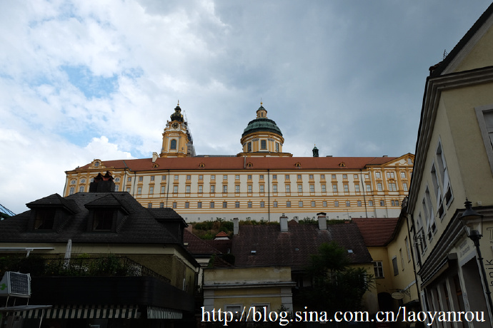
尽管由于声名显赫的学术价值使其躲过了约瑟夫二世解散修道院冲击以及拿破仑战争破坏的人祸，但终究无法逃过18世纪大火的天灾，现在我们所看到的梅尔克修道院已经是浴火重生后的修旧如新般的建筑了，如同故宫内刷得簇新的红墙及油光锃亮的琉璃瓦一样总觉得有些别扭，不得不说是一件憾事。
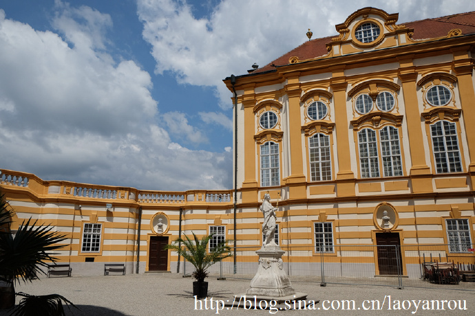
沿着小镇边一条斜斜的小路向上进入修道院后，对其内部装饰的第一观感与外部的亮黄色外墙基本一致，均经过了较为近期的修缮和维护，好看有余而古韵不足。而靠近修道院博物馆最后的大理石厅却是个例外，这个被哈布斯堡家族当做接待重要宾客的宫殿的地面及两侧墙壁采用了一红一灰两种风格迥异的大理石作为主要装饰，巴洛克风格的大厅天花板上由奥地利画家保罗·特罗格所绘的 “雅典娜与大力神”巨幅壁画则分外神采奕奕。还没等我们从巴洛克风中缓过神来，一出大理石厅便被外面大露台上美丽的瓦豪河谷风景所吸引，从这里不仅可以俯瞰整个梅尔克中世纪小镇的风貌还可以窥探多瑙河最美丽一段起点的风姿。等我们从露台另一侧再进入修道院内部时，映入眼帘的是一座唯一被列入世界文化遗产的神学图书馆，里面收藏的书籍古色古香，每本都带有厚重的历史沉淀感，而承载这些珍贵典籍的书架本身就是巴洛克式风格的木雕艺术品，在天花巨幅壁画的照耀下尤为金碧辉煌、肃穆典雅。
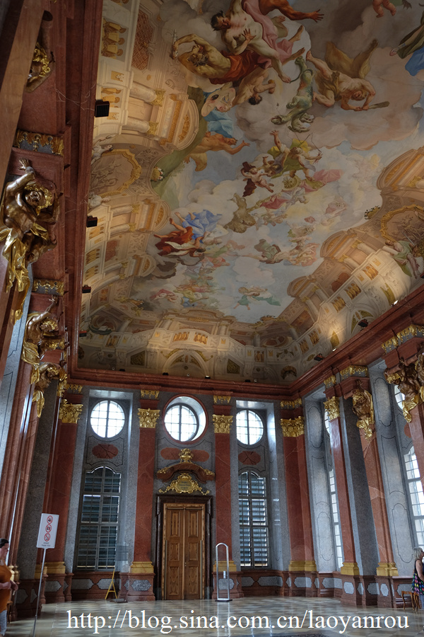
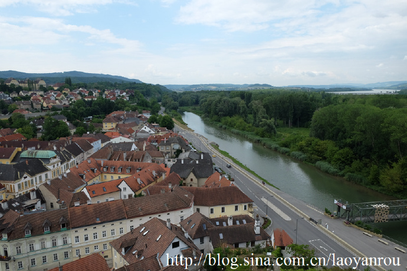
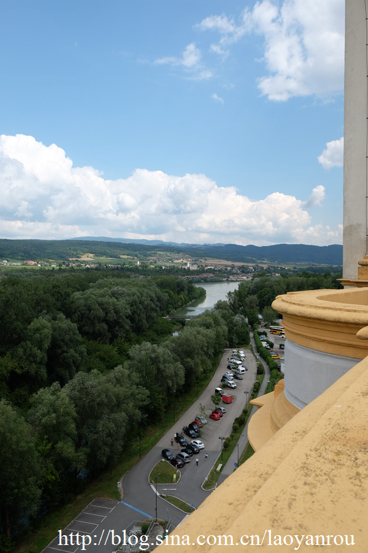
原本以为大理石厅及图书馆就是梅尔克修道院最标志性的的建筑了，不曾想在从图书馆旁的一道旋转楼梯下楼时竟然发现这条楼梯实在不简单，洛可可风格的明黄暗粉加上一圈圈螺旋向下的绿色楼梯铁枝扶手，构成了一幅后印象派的大师之作。而且为了增强迷幻效果在楼梯底部正中心安装了一面圆形的镜子，从高处俯瞰，镜子里的楼梯倒影仿佛将楼梯无限螺旋延伸向下，美轮美奂得令人眩晕，不由令人佩服设计这道楼梯的家伙真是个深谙美学与透视学的绝顶天才。
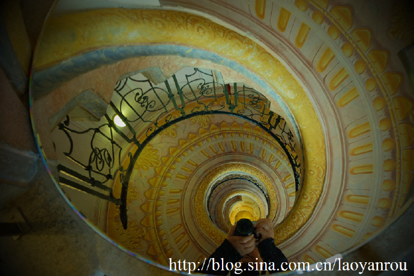
走出梅尔克修道院主建筑的时候看见了某处墙壁上张贴了梅尔克修道院重修前后的照片对比，修复前的修道院大门苔痕上阶绿，经风雨洗涮的木门漆面剥落露出了柚木的底色，而两旁门柱也是灰白斑驳，与修复后的一水明黄靓丽、窗明几净的现貌相比简直是老态龙钟了，但就我个人而言我还是喜欢未加任何修复的彼时的梅尔克修道院，那么真实、那么厚重沧桑的历史感绝无可能被所谓的“修旧如新”所替代。
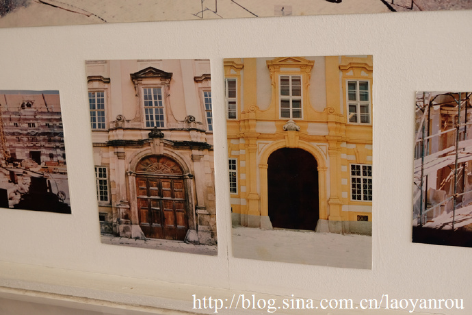
与其他修道院不同的是，由于梅尔克修道院的前身是利奥波德一世的城堡，所以其后部还有一座规模颇大的后花园，闲暇无聊时在里面沐着徐徐山风穿梭林中、聆听着修道院钟声漫步一番着实也是一种不错的享受，走累了还可以在花园里一座亭子里面小憩一下，一边品着奥地利咖啡，一边可抬头欣赏亭子内从墙壁一直延伸到天花板的自然人文风格完美融合的巴洛克壁画，身心俱可愉悦放松下来。
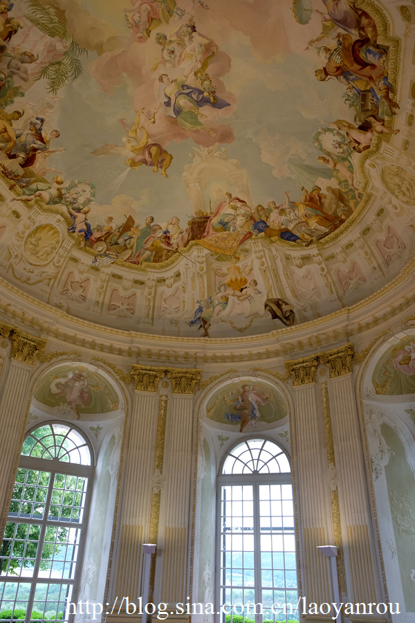
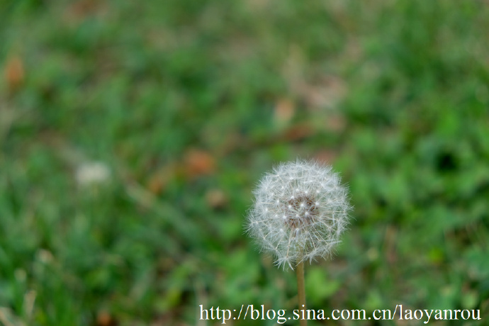
从梅尔克修道院下山来到小镇石板街和镇旁的瓦豪河谷回望修道院时又别有一番风景，只见明黄鲜亮的修道院高踞山顶巍峨耸立，行人寥寥的石板街道旁的旅馆和小商店大多粉饰一新，与山顶的修道院遥相呼应，却依然难以掩盖其骨子里的沧桑。小镇的土特产之一是大名鼎鼎的瓦豪杏，满大街贴着推销各种杏子产品的宣传画，路边的杏子树也挂满了一簇簇成熟的黄果子煞是好看，为了弥补午餐时没有尝到瓦豪杏面包的遗憾，离开梅尔克小镇前还特意买了一瓶瓦豪杏果酱带回国内。
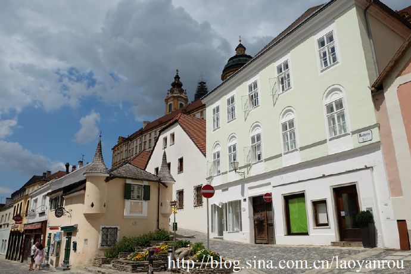
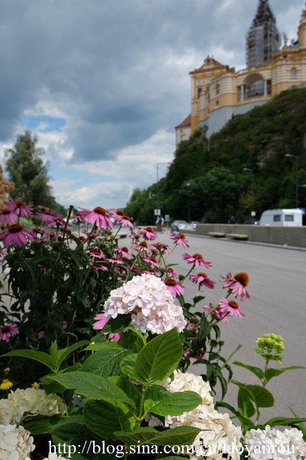
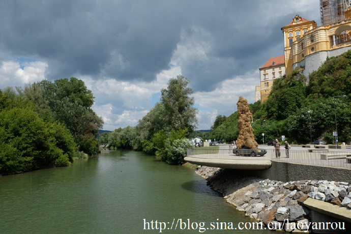
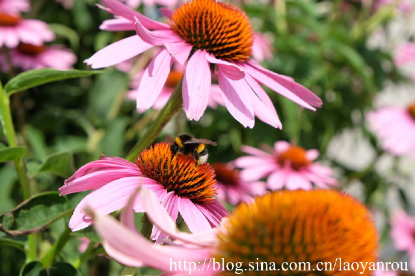
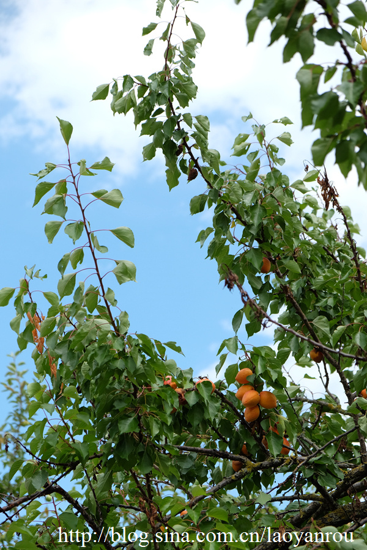
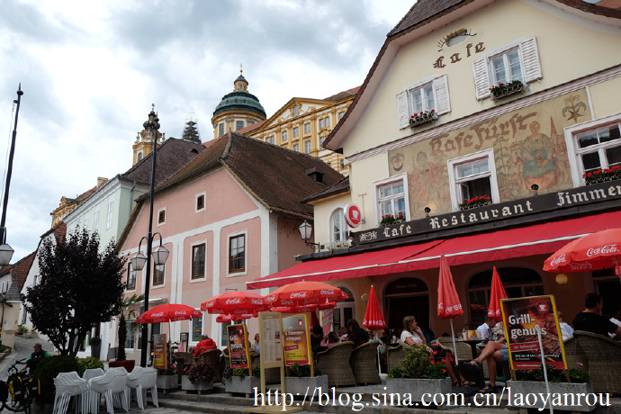
回到维也纳时间尚早，我们直奔百水公寓而去，其德文名就是简单粗暴的Hunderwasserhaus，是为了纪念建筑设计师百水先生而得名的。因为之前没做功课不知其貌，所以刚到公寓附近时，远望去只看见一幢掩映在绿茵之中的幼儿园设计风格的建筑心中还暗自纳闷难道这就是吸引无数游客来此瞻仰的所谓大师作品？走进了看时才发现我们的第一印象太过肤浅了，虽然此建筑设计貌似简单将一堆无棱无角、毫无规则的房子堆砌在一起，红黄蓝紫桔红等各种颜色仿佛小孩的水彩画似的东一块西一块的刷在不同房屋的外墙上，却恰恰反映了百水设计师回归自然、拒绝直线与规则，色彩艳丽的“人与自然共存”的建筑理念。而整栋楼在设计时尤其充分考虑了亲近自然的需要，在所有阳台和窗台上种满了两百多棵树和灌木，使其如同从树丛中长出来一样，据说若是秋天到访的话，其缤纷绚丽的颜色搭配将整个公寓装点得如同童话宫殿一般，着实令人叹为观止。
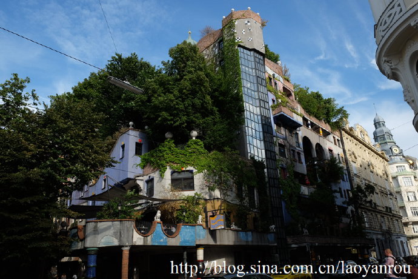
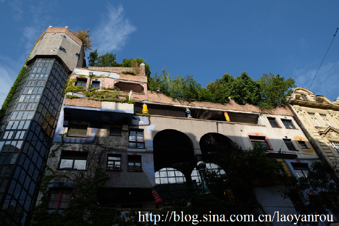
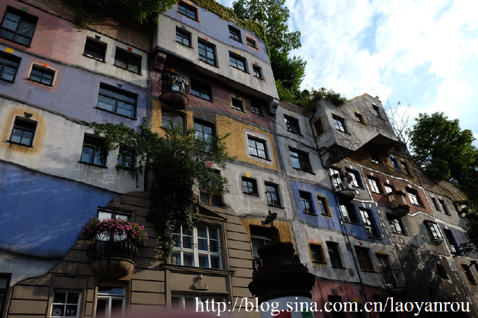
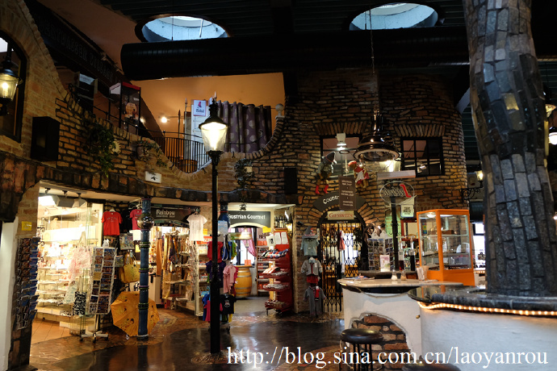
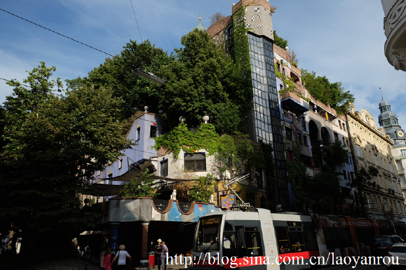
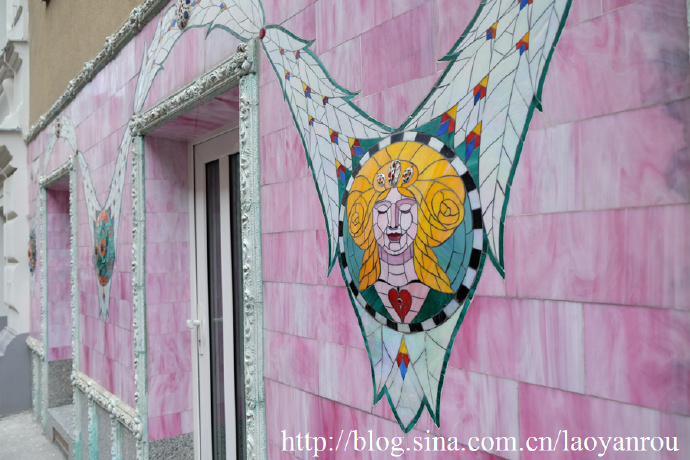
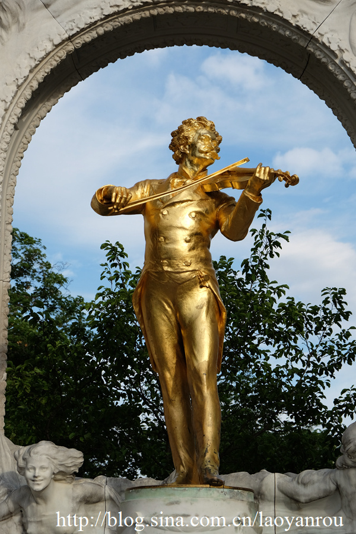
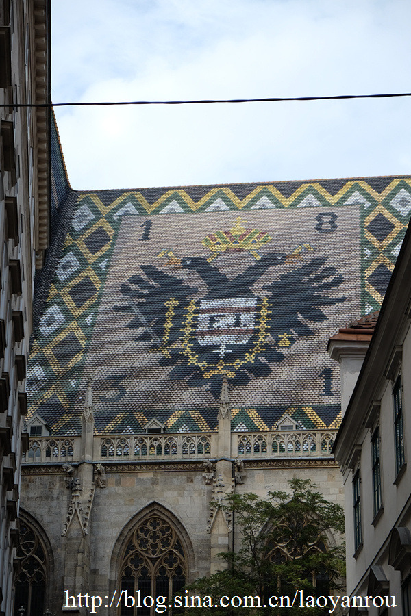
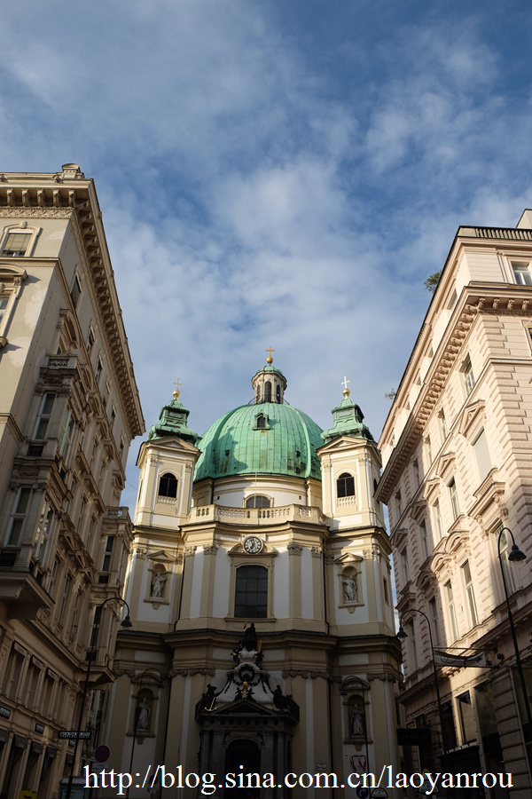
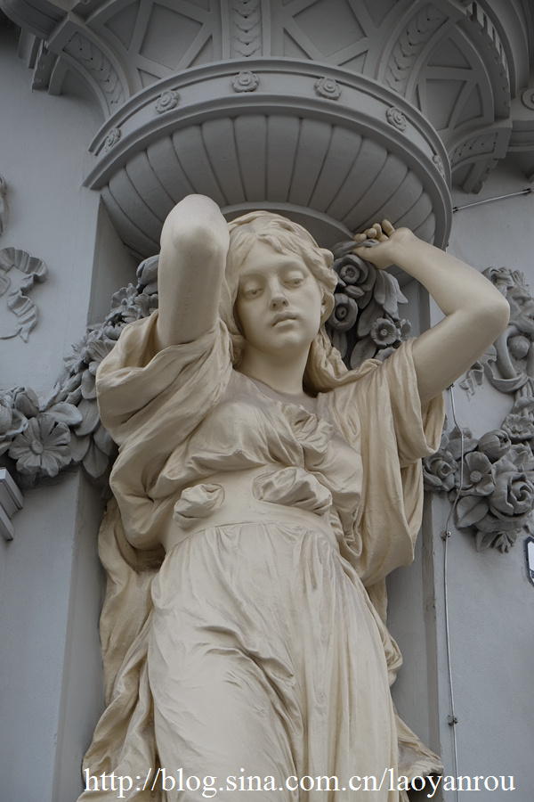
从百水公寓回公寓的路上经过了格拉本大街的欧洲最大的黑死病纪念柱，是奥地利皇帝利奥波德一世为了纪念十七世纪被鼠疫夺走生命的近2/3的维也纳人而修建的，纪念柱顶端的金色的皇帝谦卑地将皇冠摘下献给上帝为人民祈福，在天灾疾病面前人的生命和尊严显得如此渺小卑微，即便是君临天下、富可敌国奥地利皇帝也不得不献上自己的膝盖。而纪念柱旁的格拉本大街上虽然已近晚上十点，依然人头攒动、熙熙攘攘，维也纳人们正陆续从一天的劳作中解放出来，酒馆和餐馆纷纷在路旁摆好桌椅餐具，铺上了洁白桌布摆好了雅致的小紫花瓶，恭候着顾客的光临。一切都那么整齐有序、平静祥和，时间慢慢抚平了伤痕，已丝毫看不出这座城市曾遭遇的灾难和伤痛了。
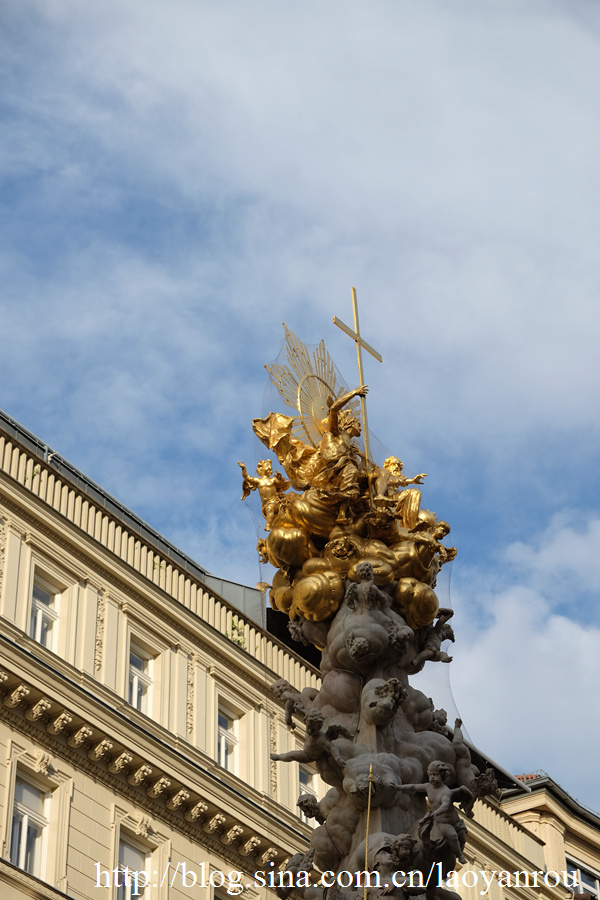
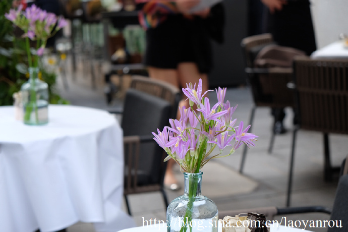
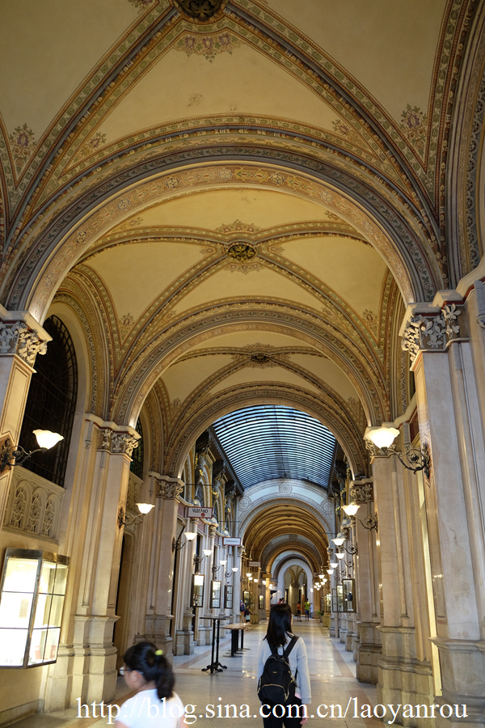